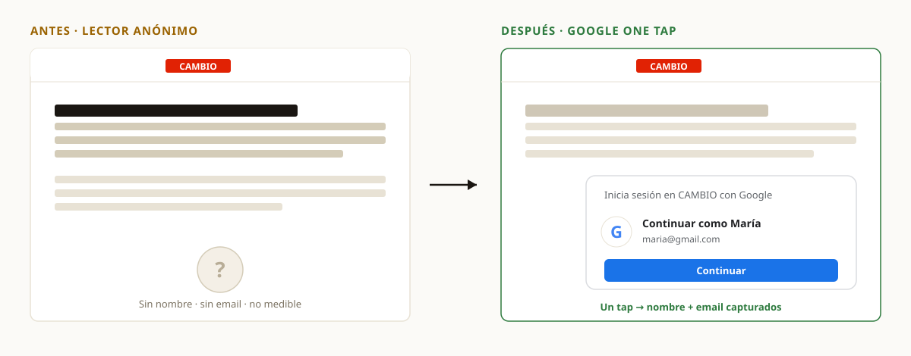
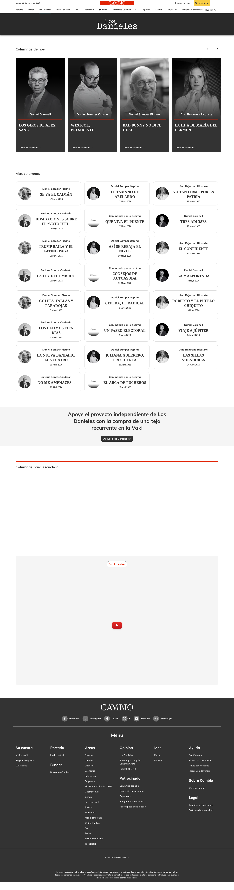
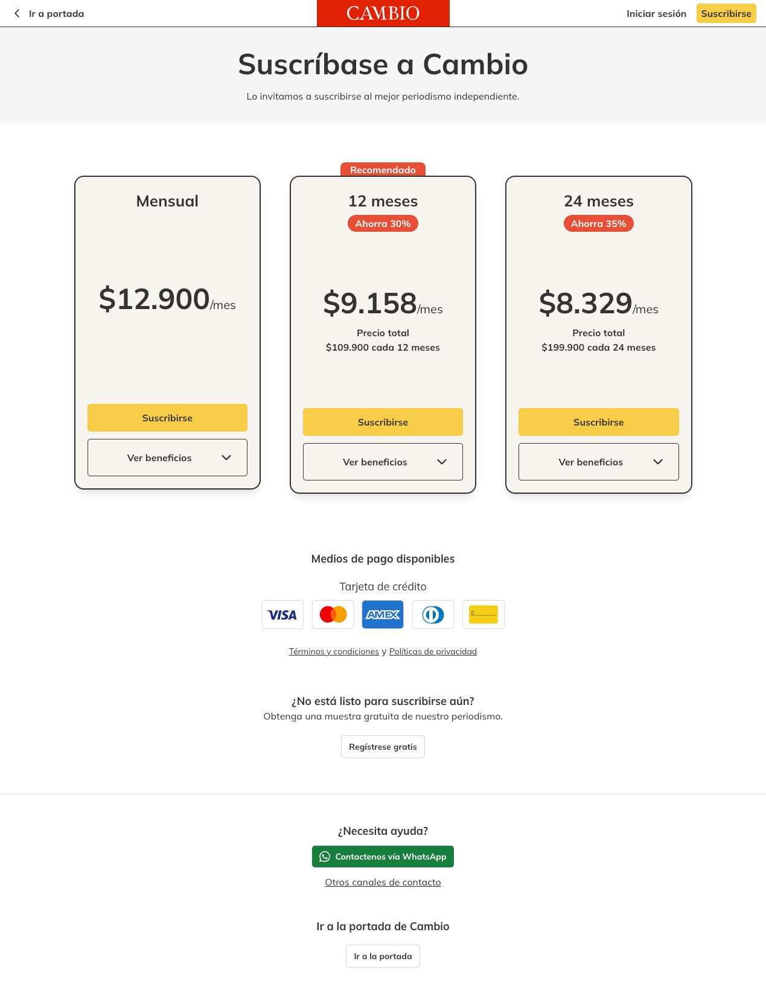
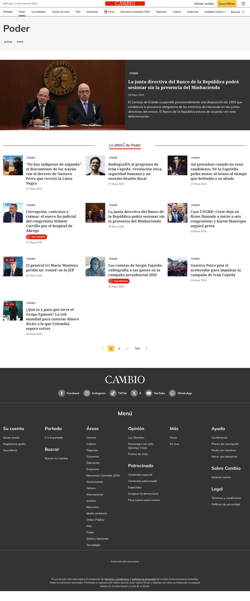
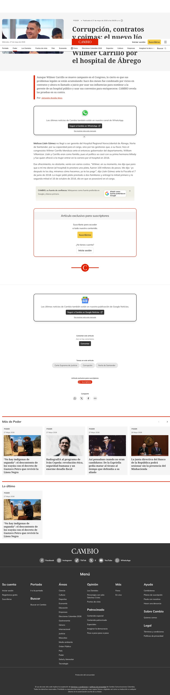
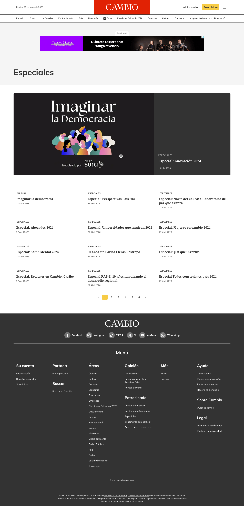
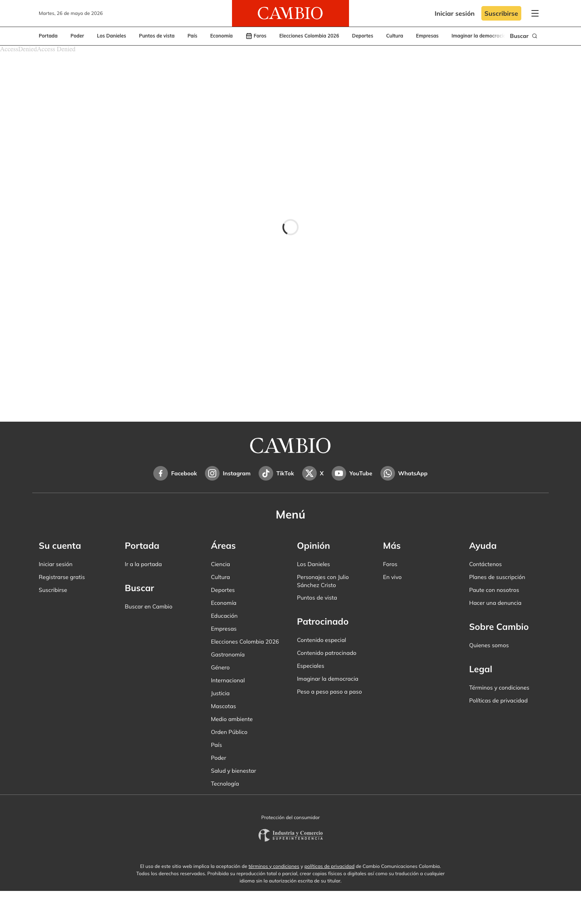
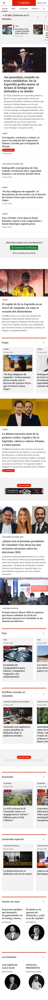
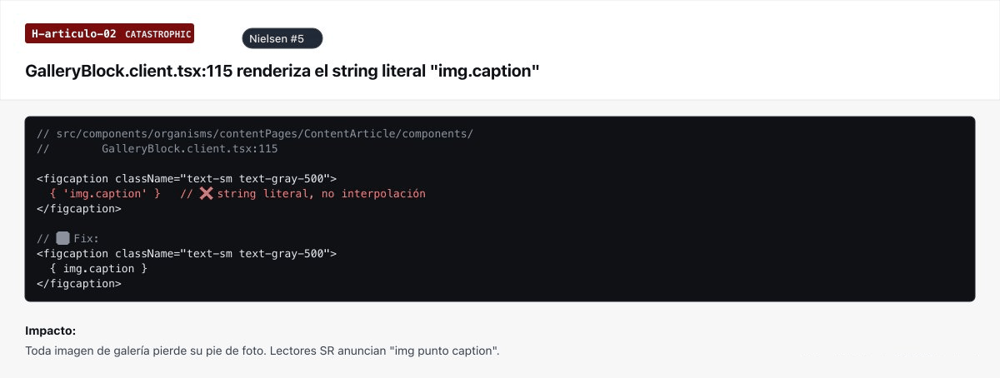
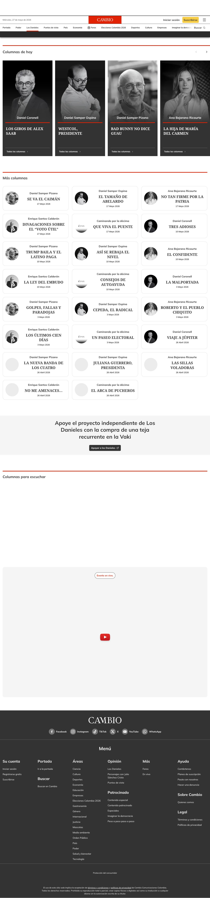

Paywall · copy aspiracional con propuesta de valor

32 intervenciones priorizadas por impacto: del hallazgo a la transformación medible
Esta sección convierte los hallazgos del diagnóstico en intervenciones concretas. Cada transformación sigue el mismo patrón: problema documentado, intervención CSS injection (con micro JavaScript donde sea necesario), hipótesis de impacto vinculada a métrica de negocio, y recomendación de A/B testing.
El refresh visual contratado no es un rediseño estético. Es una serie de intervenciones técnicas que modifican percepción de marca, accesibilidad y comportamiento de usuario sin alterar la arquitectura del CMS, las URLs ni los esquemas SEO.
Las secciones Poder, País, Economía, Justicia, Empresas, Cultura y Deportes comparten ContentSectionPage. Cada transformación sobre este componente se propaga a las 7 secciones. El esfuerzo se ejecuta una vez, el impacto se multiplica por siete.
Lo que se muestra aquí es dirección, no diseño final. La marca de CAMBIO está en rediseño con otro proveedor, y el tratamiento visual definitivo —color, tipografía, iconografía— se alinea con ese brand book cuando esté disponible. No nos adelantamos a esa guía ni competimos con ella: la complementamos.
Lo que sí es definitivo es la lógica de conversión detrás de cada propuesta: dónde vive el CTA, qué articula el valor, cómo se jerarquiza la pieza, dónde se captura el correo. Esa lógica es independiente de la marca y es lo que respalda este benchmark. Cuando llegue el brand book, ajustamos la piel; el esqueleto de conversión ya está validado.
Los seis comparadores por dimensión del benchmark, más un séptimo de captura de registro (Google One Tap), que respaldan visualmente las palancas del Benchmark de Conversión (Sección 10). Cada uno muestra el estado actual de CAMBIO frente a la propuesta de refresh CSS/JS, con su intervención técnica embebida. Sirven como puente entre el scorecard y el inventario completo de 32 transformaciones que viene a continuación.



El benchmark revela una palanca que CAMBIO no usa y que es la más atada al objetivo de negocio de crecer la base de suscriptores: el registro gratuito como paso intermedio antes del pago. Hoy el lector de CAMBIO solo tiene dos estados —anónimo o suscriptor de pago— y entre ellos hay un salto demasiado grande. Los referentes insertan un escalón intermedio: "Regístrese gratis para seguir leyendo", que desanonimiza al lector, habilita el contacto por email y multiplica la probabilidad de conversión a pago más adelante.
La inmensa mayoría del tráfico. Llega, lee y se va sin dejar rastro — CAMBIO no puede volver a contactarlo.
Email capturado. Recibe newsletters, vuelve al sitio y es el candidato cualificado para la suscripción. Hoy en CAMBIO casi no existe como estado.
El objetivo de negocio. Hoy se le pide el salto directo desde anónimo: la fricción máxima, con 9 campos de checkout al final.
Qué hacen los referentes (verificado en el benchmark): El País y El Tiempo ofrecen contenido a cambio de registro antes de mostrar el muro de pago; NYT alterna registro y suscripción en el mismo flujo. Es el modelo Guardian: entregar valor y capturar el correo antes de pedir dinero. El email pasa a ser el canal de retorno — justo el que en CAMBIO hoy pesa apenas 0.3% del tráfico.
Cómo lo ejecuta CAMBIO en Fase 1 (CSS/JS, sin tocar el motor de paywall): esta palanca no es una transformación nueva — es la lectura coordinada de tres que ya están en el plan como una sola escalera de conversión:
Qué es Fase 1 y qué es Fase 2: el tratamiento visual del prompt de registro y la captura de email son 100% Fase 1. El soft gate propiamente dicho —contar artículos y exigir registro al N-ésimo— necesita el contador del motor de paywall, así que su lógica es Fase 2. Es el mapeo directo al objetivo #1 del cliente: crecer la base de suscriptores empieza por crecer la base de registrados — y eso arranca en este sprint.
El punto de partida del sprint, ordenado bajo una sola regla: primero conversión. El primer grupo son las palancas que el Benchmark de Conversión (Sección 10) valida como las de mayor retorno — las mismas seis dimensiones de los comparadores de arriba. El segundo grupo es higiene obligatoria (bug, legal, accesibilidad funcional) que corre en paralelo. El inventario completo de 32 está debajo, con la prioridad de cada una ajustada a esta misma lectura y las palancas de conversión marcadas con su chip.
Convertir la primera posición del carrusel 'Al día' en un hero editorial de ancho completo con eyebrow, titular display y bajada extendida. El carrusel restante pasa a strip secundario.
Badge 'Premium' con color de marca y contraste ≥5.8:1, superpuesto sobre la imagen de la card. El usuario identifica contenido exclusivo antes de hacer clic.
Recirculación editorial al final de cada columna individual hacia contenido premium relacionado + CTA contextual de suscripción. Convierte los lectores profundos de columnas (engagement 6m+ en piezas como Coronell CPB) en motor de adquisición.
'Suscribirse' pasa de link de texto a botón sólido rojo CAMBIO. 'Iniciar sesión' se mantiene como link neutro. Quick win de mayor ROI.
Eyebrow label sobre pieza dominante, descriptor editorial bajo H1 y sub-nav temática horizontal. Se ejecuta una vez sobre ContentSectionPage, propaga a 7 secciones.
Bloque intercalado después del párrafo 3-4 con artículos relacionados. CAMBIO es el único medio del benchmark sin recirculación inline (palanca D4). Scroll promedio 37.82% — la recirculación al final no alcanza a la mayoría.
Barra de progreso fija debajo del nav (palanca D4). Mejora retención en artículos largos de investigación — el contenido premium que justifica la suscripción.
Badge premium arriba, bajada extendida y mini-CTA "Suscríbete y léelo completo" con color de marca sobre la pieza estelar del home (palanca D2 del benchmark).
'1 Mes' → 'Mensual', '12 Meses' → 'Anual — Ahorra 35% · Recomendado' (palanca D6). El ahorro visible reduce la fricción de comparación.
Prompt de Google One Tap que captura nombre y email del lector anónimo en un solo tap (Chrome ≈ 90% del mercado). Desanonimiza sin formulario. La verificación del token es dependencia de backend (Etapa 0).
No son conversión, pero son innegociables: un bug visible en producción, un riesgo legal y dos fallos de accesibilidad funcional. Se ejecutan en el mismo Sprint 1, sin competir con las palancas de conversión.
GalleryBlock renderiza el string literal 'img.caption' en producción. Bug catastrófico — el usuario ve código. Corrección de una línea.
Agregar botón 'Rechazar' junto a 'Aceptar'. Riesgo legal bajo Ley 1581/2012 de protección de datos personales de Colombia.
Home sin elemento main ni skip link. WCAG 2.4.1 nivel A. Quick win con impacto en Lighthouse.
Mismo ID en trigger y dialog rompe aria-controls. Impacto en 72% del tráfico (mobile).
Sticky bottom-right en mobile con icono WhatsApp. 72% del tráfico es mobile. WhatsApp es el canal de cierre dominante en Colombia.
Primera card del grid con tamaño 2× (span 2 columnas). CSS :first-child sobre ContentSectionPage — cascada a 7 secciones.
Módulos intercalados: Lo más leído, Columnistas, Investigaciones. Retiene al lector en el vertical editorial. Cascada ×7.
Ordenadas por ID, con su prioridad (P0 / P1 / P2). Las filas marcadas Conversión son las palancas que el benchmark valida como de mayor retorno: todas en P0. Toca cualquier fila para abrir su detalle.
| ID | Transformación | Despliegues | Hipótesis primaria | Esfuerzo | Prioridad |
|---|---|---|---|---|---|
| T01 | Pieza dominante del Home como hero editorial Conversión | Home | Aumento de scroll depth en home y tiempo en página. Baseline... | M | P0 |
| T02 | Cards premium con badge aspiracional y diferenciación visual Conversión | Home Secciones | Mejora del hit-paywall qualified rate. Los clics al paywall ... | S | P0 |
| T03 | Los Danieles: puerta de entrada a contenido premium Conversión | Opinión / Los Danieles | Email captures desde sección de mayor tráfico orgánico de op... | M | P0 |
| T04 | Header CTA Suscribirse como botón sólido con jerarquía visual Conversión | Todos | CTR a /suscribirse +30-80% (rango documentado). Quick win de... | S | P0 |
| T05 | Eyebrow editorial + sub-navegación temática en secciones Conversión | Poder País Economía Justicia Empresas Cultura Deportes | Percepción de marca editorial y credibilidad. CTR pieza domi... | S | P0 |
| T06 | Carousel dots a 24×24 px — corrección WCAG 2.5.8 | Todos | 74 violaciones WCAG resueltas. Impacto directo en Lighthouse... | S | P1 |
| T07 | Contraste badge --color-successful a ratio AA | Todos | 5 nodos axe-core corregidos. Mejora Lighthouse.... | S | P1 |
| T08 | Recirculación inline "Lea también" en artículos Conversión | Artículo | Aumento de páginas/sesión. Mayor probabilidad de clic a mita... | M | P0 |
| T09 | Hub Especiales con tipologización editorial | Especiales | Engagement con hub. Lector identifica tipo de especial sin c... | S | P1 |
| T10 | Especial detalle con storytelling visual | Especiales | Percepción de valor de marca. Cada especial bien presentado ... | M | P1 |
| T11 | Buscador visual prominente en header | Todos | Aumento de uso del buscador (% sesiones). Baseline GA4: 835k usuarios/mes, 3.2M PV/mes... | S | P2 |
| T12 | Footer rediseñado con CTA suscripción y newsletter | Todos | Conversiones y email captures desde footer. Baseline pendien... | M | P2 |
| T13 | Indicador de progreso de lectura en artículos Conversión | Artículo | Aumento de completion rate en artículos largos.... | S | P0 |
| T14 | Timestamp relativo en cards editoriales | Home Secciones | Percepción de inmediatez editorial.... | S | P2 |
| T15 | Diferenciación visual noticia vs opinión vs patrocinado | Home | Credibilidad editorial + transparencia.... | S | P2 |
| T16 | Carruseles temáticos con jerarquía interna | Home | CTR en primera pieza por carrusel.... | S | P2 |
| T17 | WhatsApp como canal asistido prominente | Home Artículo | Conversiones asistidas. WhatsApp es el canal de cierre más e... | S | P1 |
| T18 | Pieza editorial estelar con CTA contextual premium Conversión | Home | Conversión desde piezas destacadas.... | S | P0 |
| T19 | Home: landmark main + skip link | Home | Lighthouse Accessibility + compliance WCAG A.... | S | P0 |
| T20 | HamburgerMenu: IDs únicos para a11y mobile | Todos (mobile) | Corrección de fallo funcional a11y en nav mobile.... | S | P0 |
| T21 | NavigationRibbon con aria-current=page | Todos | Orientación para usuarios asistivos.... | S | P1 |
| T22 | Sub-secciones envueltas en nav semántico | Secciones | Landmarks WCAG para tecnología asistiva.... | S | P1 |
| T23 | Los Danieles: h1 hidden → sr-only | Opinión | h1 accesible para lectores de pantalla.... | S | P1 |
| T24 | Buscador anuncia cantidad de resultados a SR | Buscador | Feedback para usuarios asistivos.... | S | P1 |
| T25 | Bug literal 'img.caption' en GalleryBlock — hotfix | Artículo | Eliminación del único bug catastrófico detectado. Impacto di... | S | P0 |
| T26 | SubscriptionPlans: labels descriptivos en tabs de períodos Conversión | Página de planes | Mejora de claridad en la decisión de período. El ahorro visi... | S | P0 |
| T27 | Grid Lo último: jerarquía visual con primera pieza mayor | Poder País Economía Justicia Empresas Cultura Deportes | Aumento de CTR en la primera pieza del grid. Efecto cascada ... | S | P1 |
| T28 | Recirculación en secciones: Lo más leído + Columnistas + Investigaciones | Poder País Economía Justicia Empresas Cultura Deportes | Aumento de páginas/sesión dentro de la sección. Recirculació... | M | P1 |
| T29 | CookieConsent: botón Rechazar visible — corrección legal | Todos | Mitigación de riesgo legal. Compliance con regulación colomb... | S | P0 |
| T30 | Identidad cromática por sección editorial | Poder País Economía Justicia Empresas Cultura Deportes | Identidad de producto diferenciada. El lector reconoce la se... | S | P2 |
| T31 | Paywall CSS legacy: migración de globals a tokens del design system | Artículo | Mejora de mantenibilidad. El paywall adopta automáticamente ... | M | P1 |
| T32 | Google One Tap — captura de registro sin fricción Conversión | Todos | Desanonimización del lector anónimo en un tap. Captura nombre + email sin formulario. Dependencia de backend (Etapa 0)... | M | P0 |
S = 2-4 horas · M = 4-12 horas. P0 = sprint 1 · P1 = sprint 2 · P2 = sprint 3. Haga clic en cualquier fila para ver el detalle.

El above the fold del home lo ocupa un strip horizontal "Al día | Entérese en 5 minutos" con cards de breaking news etiquetadas por sección (Justicia, Poder, Economía, etc.). La pieza dominante editorial existe pero queda relegada debajo de este strip, fuera del ATF en la mayoría de viewports. El patrón de medios premium (NYT, El País, FT) ubica la pieza dominante como hero del ATF. CAMBIO invierte la prioridad: breaking news primero, editorial curado segundo.
Convertir la primera posición del carrusel en hero editorial de ancho completo con imagen prominente, eyebrow label editorial (Investigación / Análisis / Exclusivo), titular display grande, bajada extendida, autor con foto y timestamp relativo. El carrusel restante se mueve debajo como strip secundario.
Aumento de scroll depth en home y tiempo en página. Baseline GA4 (Feb-Abr 2026): scroll promedio 37.82%, bounce rate home 82%, engagement 47s/página.
Sí. Variante A: carrusel actual. Variante B: hero + strip. Métrica: scroll depth + CTR pieza dominante.
Benchmark (pieza dominante relegada bajo strip "Al día") + H-seccion-poder-01.
Instrumento: GA4: scroll_depth + time_on_page en /home
Frecuencia: Semanal durante A/B test, mensual post-implementación
Umbral de éxito: Scroll depth >60% (vs baseline actual) y tiempo en home +15% para declarar éxito

Las tarjetas premium muestran badge "Suscriptores" en rojo con ícono, pero su tamaño es pequeño y su posición (inferior de la card) no capta la atención antes del clic. La diferenciación visual entre contenido abierto y premium es insuficiente para prevenir hits no cualificados al paywall.
Badge "Premium" con color de marca, contraste mínimo 5.8:1, sobre la imagen de la card. Borde de diferenciación cromática. El usuario identifica a simple vista qué contenido es premium antes de hacer clic.
Mejora del hit-paywall qualified rate. Los clics al paywall son deliberados, no accidentales. Baseline GA4: 835k usuarios/mes, 3.2M PV/mes.
Sí. Variante A: badge actual (rojo pequeño). Variante B: badge premium prominente superpuesto sobre imagen. Métrica: ratio conversión / hit-paywall.
H-seccion-poder-05 + Benchmark + WCAG contraste (T07).
Instrumento: GA4: evento custom hit_paywall con parámetro badge_visible (true/false). Ratio: conversiones_paywall / hit_paywall
Frecuencia: Semanal durante A/B test
Umbral de éxito: Hit-paywall qualified rate +20% (ratio conversión/hit sube porque los clics son deliberados)

Los Danieles es el 2do destino más visitado del sitio (87.815 usuarios únicos en 3 meses, 3.5% del tráfico). El hub/índice tiene scroll bajo (8.8%) — los usuarios escanean y eligen columna. Pero las piezas individuales de columnistas generan engagement profundo extraordinario: la columna de Daniel Coronell sobre el premio CPB registra 6m 24s de avg reading time per page (273% del benchmark del sitio). La oportunidad estratégica está en las páginas individuales de cada columna, no en el hub. El contenido es abierto por contrato editorial.
Recirculación editorial al final de cada columna individual hacia contenido premium relacionado. Formato: bloque "Si le interesó este análisis de [columnista], acceda a:" con 1-2 artículos premium de CAMBIO temáticamente conectados + CTA contextual de suscripción. La hipótesis: convertir los lectores profundos de columnas individuales (los que ya dedican 5+ minutos) en suscriptores de contenido premium temáticamente relacionado. Respeta el contrato: Los Danieles permanece abierto, la intervención es de recirculación hacia premium.
Click-through desde Los Danieles hacia contenido premium >3% de sesiones. Tasa de conversión a suscriptor originada en lectores de Los Danieles medible como nueva fuente de adquisición.
Sí. Variante A: sin recirculación premium. Variante B: bloque editorial con artículos premium + CTA contextual. Métrica primaria: click-through → premium. Secundaria: conversiones a suscriptor originadas en Los Danieles.
H-opinion-01 + restricción contractual (contenido abierto → recirculación a premium, no bloqueo).
Instrumento: Plataforma de email marketing (Mailchimp/Sendinblue): formulario inline con UTM source=los-danieles. GA4: evento email_capture
Frecuencia: Semanal
Umbral de éxito: ≥50 email captures/semana desde la sección Los Danieles como baseline inicial

"Suscribirse" compite visualmente con "Iniciar sesión" — ambos tienen el mismo peso visual. El ojo no distingue cuál es la acción primaria.
"Suscribirse" pasa a botón sólido rojo CAMBIO, texto blanco. "Iniciar sesión" como link neutro. CSS-only.
CTR a /suscribirse +30-80% (rango documentado). Quick win de mayor ROI por esfuerzo mínimo y alcance transversal.
Sí. Variante A: header actual. Variante B: botón sólido. Test rápido (2-3 semanas).
Bloque H01 del funnel CRO.
Instrumento: GA4: evento click con parámetro element=header_cta_suscribirse. Comparar CTR antes/después
Frecuencia: Semanal durante A/B test (2-3 semanas)
Umbral de éxito: CTR a /suscribirse +30% mínimo para declarar éxito (rango esperado: +30-80%)

La pieza dominante de Poder no distingue entre investigación, análisis y nota rápida. H1 "Poder" sin descriptor editorial. Sin sub-navegación temática. Grid visualmente uniforme.
Tres intervenciones CSS sobre ContentSectionPage: (1) eyebrow label editorial, (2) descriptor bajo H1, (3) sub-nav temática horizontal. Se ejecuta una vez, propaga a 7 secciones.
Percepción de marca editorial y credibilidad. CTR pieza dominante + uso de sub-nav.
Sí (Poder como piloto). Tras validar, aplicar a 6 restantes.
H-seccion-poder-01 a 04 + Benchmark (NYT, El Espectador, La Silla Vacía).
Instrumento: GA4: CTR pieza dominante (evento click en hero de sección) + eventos en sub-nav temática. Medir en Poder como piloto
Frecuencia: Semanal durante piloto (4 semanas), luego mensual
Umbral de éxito: CTR pieza dominante +25% y uso de sub-nav >5% de sesiones en sección
Indicadores del carrusel a 8×8 px, debajo del mínimo 24×24 px de WCAG 2.2 (criterio 2.5.8, AA). 74 nodos afectados. Mayor conteo de violaciones.
Dot a 24×24 px con zona de toque 44×44 px. Una regla CSS corrige 74 nodos.
74 violaciones WCAG resueltas. Impacto directo en Lighthouse Accessibility.
No. Compliance directa.
axe-core: target-size 74 nodos (Sección 4).
Instrumento: Lighthouse CI: correr auditoría automatizada post-deploy. axe-core: validar target-size = 0 violaciones
Frecuencia: Una vez post-deploy + cada release
Umbral de éxito: 0 violaciones target-size en axe-core (de 74 a 0). Binario: pasa o no pasa
Token --color-successful (#27ae60) sobre fondo blanco: ratio 2.87:1. WCAG exige 4.5:1.
Oscurecer a #1a7a42 (ratio 5.8:1). Cambio de un token propaga a todos los badges.
5 nodos axe-core corregidos. Mejora Lighthouse.
No. Compliance.
axe-core: color-contrast 5 nodos. WCAG 1.4.3.
Instrumento: axe-core: validar color-contrast = 0 violaciones para --color-successful. Herramienta de contraste (WebAIM) para verificar ratio
Frecuencia: Una vez post-deploy
Umbral de éxito: Ratio ≥4.5:1 (AA). De 2.87:1 a ≥5.8:1. Binario

CAMBIO es el único medio del benchmark sin recirculación intercalada en el cuerpo del artículo. Existe al final (fortaleza) pero no entre párrafos.
Bloque "Lea también:" después del tercer párrafo, con 1-2 artículos relacionados. El micro JS reutiliza el módulo de recirculación existente.
Aumento de páginas/sesión. Mayor probabilidad de clic a mitad de lectura que al final.
Sí. Variante A: sin inline. Variante B: con "Lea también". Métrica: páginas/sesión.
Benchmark (CAMBIO único sin recirculación inline) + H-seccion-poder-06.
Instrumento: GA4: páginas/sesión en flujo artículo. Evento click en bloque 'Lea también' con parámetro posición=inline
Frecuencia: Semanal durante A/B test
Umbral de éxito: Páginas/sesión +0.3 (ej: de 1.8 a 2.1) en sesiones que pasan por artículo

Hub /especiales con grid uniforme sin diferenciar rankings, investigaciones y series multimedia. H1 sin descriptor editorial.
Eyebrow label sobre cada card (Ranking / Investigación / Serie), pieza destacada con tratamiento hero, descriptor bajo H1.
Engagement con hub. Lector identifica tipo de especial sin clic.
Opcional (volumen bajo). Medir antes/después.
especiales-home-02 + especiales-home-03.
Instrumento: GA4: CTR por tipo de especial (filtrar por eyebrow label) + scroll depth en /especiales
Frecuencia: Mensual (volumen bajo)
Umbral de éxito: Engagement medido como CTR en cards del hub +15% y scroll depth >50%

Página de detalle como listado de artículos sin hero, sin capítulos, sin créditos. Base técnicamente impecable (a11y 100, 0 axe).
Hero visual + título display + créditos del equipo. Estructura de capítulos. Micro JS para H1 (actualmente H2).
Percepción de valor de marca. Cada especial bien presentado es activo de reputación editorial.
No (volumen bajo). Medir antes/después.
especiales-detalle-01 + especiales-detalle-02.
Instrumento: GA4: time_on_page en páginas de especial detalle + scroll_depth + shares (si se instrumenta)
Frecuencia: Mensual
Umbral de éxito: Tiempo en página +20% y completion rate >40%
Link de texto plano "Buscar" en header, sin campo visible. Buscador más débil de todos los medios evaluados.
Campo visible con icono lupa, placeholder "Buscar en CAMBIO", overlay al clic. Contextual con autocompletado es Fase 3.
Aumento de uso del buscador (% sesiones). Baseline GA4: 835k usuarios/mes, 3.2M PV/mes.
Sí. Variante A: link. Variante B: campo visual. Métrica: % sesiones con búsqueda.
Benchmark (CAMBIO buscador más débil) + Backlog Nielsen.
Instrumento: GA4: % sesiones con evento search_initiated. Comparar con baseline actual
Frecuencia: Semanal durante A/B test
Umbral de éxito: % sesiones con búsqueda +50% (ej: de 2% a 3% si baseline es bajo)
Footer con links planos para "Suscribirse" y "Registrarse". Última oportunidad de conversión desaprovechada.
Banner pre-footer con propuesta de valor (3 beneficios), CTA sólido, formulario newsletter inline. WhatsApp elevado.
Conversiones y email captures desde footer. Baseline GA4: 835k usuarios/mes, 3.2M PV/mes.
Sí. Variante A: footer actual. Variante B: banner pre-footer + newsletter.
Backlog Baymard + H06 funnel CRO.
Instrumento: GA4: eventos click_cta_footer + email_capture_footer. Atribución por posición=footer
Frecuencia: Semanal durante A/B test
Umbral de éxito: ≥20 email captures/semana desde footer + CTR a /suscribirse >0.5% de sesiones que llegan al footer
Artículos largos de investigación sin indicador de progreso. Sin señales de cuánto falta, incrementa abandono en piezas largas.
Barra de progreso fija debajo del nav, avanza con scroll. Mejora retención en artículos premium.
Aumento de completion rate en artículos largos.
Sí. Variante A: sin barra. Variante B: con barra. Métrica: scroll depth >800 palabras.
Backlog Nielsen (progreso de lectura).
Instrumento: GA4: scroll_depth segmentado por artículos >800 palabras. Evento custom article_completed al llegar a 90%
Frecuencia: Semanal durante A/B test
Umbral de éxito: Completion rate en artículos largos +15% (ej: de 35% a 40%)
Cards con fecha absoluta ("27 Mayo 2026"). No transmite inmediatez editorial.
Timestamp relativo ("hace 2 horas") para contenido <48h, absoluto para >48h. Transmite frescura y urgencia.
Percepción de inmediatez editorial.
Opcional. Medir engagement con piezas recientes.
Backlog NN/G News.
Instrumento: GA4: CTR en cards con timestamp <48h vs >48h. Segmentar por tipo de timestamp (relativo vs absoluto)
Frecuencia: Mensual
Umbral de éxito: CTR en cards recientes (<48h) +10% con timestamp relativo

Cards de contenido editorial, opinión y patrocinado comparten el mismo tratamiento visual. El lector no distingue el tipo de contenido.
Eyebrow label por tipo: "Noticia" (neutro), "Opinión" (serif), "Patrocinado" (badge transparente obligatorio). CSS-only.
Credibilidad editorial + transparencia.
No prioritario. Implementar directamente.
Backlog LATAM (diferenciación de tipos).
Instrumento: GA4: CTR segmentado por tipo de contenido (noticia/opinión/patrocinado) post-implementación de eyebrow labels
Frecuencia: Mensual
Umbral de éxito: Medición cualitativa de transparencia + CTR por tipo ±5% como referencia
Los 8 carruseles de secciones usan el mismo layout uniforme. Sin diferenciación entre pieza principal y secundarias.
Primera posición con tamaño mayor (card hero). Siguientes como strip compacto. CSS :first-child.
CTR en primera pieza por carrusel.
Sí. Variante A: uniforme. Variante B: con jerarquía.
Backlog NN/G News.
Instrumento: GA4: CTR en primera posición de cada carrusel temático vs posiciones 2-N
Frecuencia: Semanal durante A/B test
Umbral de éxito: CTR primera pieza +20% respecto al layout uniforme
Botón WhatsApp para suscripciones enterrado con mínima prominencia visual.
Card destacada con icono prominente. Sticky bottom-right en móvil. CTA: "¿Dudas? Te ayudamos a elegir tu plan".
Conversiones asistidas. WhatsApp es el canal de cierre más efectivo en Colombia.
Sí. Variante A: posición actual. Variante B: sticky prominente.
Backlog Baymard + H04 funnel CRO.
Instrumento: GA4: evento click_whatsapp con parámetro posición (sticky/inline). WhatsApp Business API: conversaciones iniciadas
Frecuencia: Semanal
Umbral de éxito: Sesiones → WhatsApp +40% vs posición actual. Conversiones asistidas rastreables en WhatsApp Business
Pieza estelar (imagen XL + título) con etiqueta "Suscriptores" al final sin CTA explícito.
Badge premium arriba. Bajada extendida. Mini-CTA "Suscríbete y léelo completo" con color de marca.
Conversión desde piezas destacadas.
Opcional. Medir CTR a /suscribirse.
H03 funnel CRO.
Instrumento: GA4: evento click_cta_pieza_estelar con destino /suscribirse
Frecuencia: Mensual (1 pieza activa a la vez)
Umbral de éxito: CTR a /suscribirse desde pieza estelar >1% de impresiones
Home sin elemento main ni enlace "Saltar al contenido". WCAG 2.4.1 nivel A.
Agregar main wrapper y skip link posicionado. Quick win Lighthouse + usuarios asistivos.
Lighthouse Accessibility + compliance WCAG A.
No. Compliance.
H-home-01.
Instrumento: Lighthouse CI: Accessibility score. axe-core: validar presencia de main landmark
Frecuencia: Una vez post-deploy + cada release
Umbral de éxito: main landmark presente + skip link funcional. Lighthouse Accessibility +2-3 puntos
Mismo id "hamburger-menu" en trigger y dialog. Rompe aria-controls.
Renombrar IDs + actualizar aria-controls. Impacto en toda la base mobile (60-80% tráfico).
Corrección de fallo funcional a11y en nav mobile.
No. Bug fix.
H-transversal-02.
Instrumento: axe-core: validar 0 violaciones de duplicate-id en nav mobile. Test manual con lector de pantalla
Frecuencia: Una vez post-deploy
Umbral de éxito: 0 violaciones duplicate-id. aria-controls funcional en VoiceOver/NVDA
Ribbon sin aria-current="page" en link activo. Usuarios SR sin orientación contextual.
Agregar aria-current="page" al link activo.
Orientación para usuarios asistivos.
No. Compliance.
H-transversal-03.
Instrumento: Test manual con lector de pantalla: verificar que SR anuncia sección activa al navegar
Frecuencia: Una vez post-deploy
Umbral de éxito: aria-current='page' presente en link activo. Verificable con DevTools
Sub-secciones en div en vez de nav aria-label="Sub-secciones".
Envolver navItems en nav con aria-label.
Landmarks WCAG para tecnología asistiva.
No. Compliance.
H-seccion-01.
Instrumento: axe-core: validar landmark nav presente para sub-secciones. Lighthouse structure
Frecuencia: Una vez post-deploy
Umbral de éxito: nav con aria-label presente en todas las secciones con sub-navegación
h1 con atributo hidden — invisible para SR. Debería usar sr-only.
Reemplazar hidden por clase sr-only. Una línea.
h1 accesible para lectores de pantalla.
No. Compliance.
H-opinion-01.
Instrumento: axe-core + test manual SR: verificar que h1 es anunciado por lector de pantalla en Los Danieles
Frecuencia: Una vez post-deploy
Umbral de éxito: h1 visible para SR (sr-only) y no visible para sighted users
Resultados de búsqueda sin anunciar cantidad a SR. Usuario SR no sabe si hay 0 o 100.
aria-live region: "[N] resultados para [query]".
Feedback para usuarios asistivos.
No. Compliance.
H-buscador-01.
Instrumento: Test manual con SR: verificar que al cargar resultados se anuncia '[N] resultados para [query]'
Frecuencia: Una vez post-deploy
Umbral de éxito: aria-live region funcional, anuncio audible en VoiceOver/NVDA

GalleryBlock.client.tsx línea 115 renderiza el string literal 'img.caption' en vez del caption real de la imagen. Bug de severidad catastrófica — el usuario ve texto de código en producción.
Corregir la referencia de propiedad en GalleryBlock para que lea el campo caption del objeto imagen. Micro fix de una línea.
Eliminación del único bug catastrófico detectado. Impacto directo en percepción de calidad editorial.
No. Bug fix inmediato.
H-articulo-02 (CATASTROPHIC). Hallazgo #1 del Top 10.
Instrumento: QA visual: verificar que el caption real de la imagen aparece en GalleryBlock en vez del string 'img.caption'
Frecuencia: Una vez post-deploy + regression test
Umbral de éxito: 0 instancias del string literal 'img.caption' visible en producción. Binario

Los tabs de selección de período en la página de planes usan plan.period como label, generando texto genérico ("1 Mes", "3 Meses", "12 Meses") sin propuesta de valor en el propio tab.
Labels descriptivos: "Mensual", "Trimestral — Ahorra 30%", "Anual — Ahorra 35% · Recomendado". El tab actúa como primer ancla de la decisión de precio.
Mejora de claridad en la decisión de período. El ahorro visible en el tab reduce fricción de comparación.
Sí. Variante A: labels genéricos. Variante B: descriptivos con ahorro. Métrica: selección de plan anual.
H-transversal-04 + Backlog Baymard.
Instrumento: GA4: selección de plan (evento select_plan con parámetro period). Comparar distribución antes/después
Frecuencia: Semanal durante A/B test
Umbral de éxito: Selección de plan anual +10% (redistribución hacia planes de mayor valor)

El grid "Lo último de Poder" (y sus equivalentes en 6 secciones hermanas) muestra todas las cards con el mismo tamaño y peso visual. Sin jerarquía entre la nota más reciente y las anteriores.
Primera card del grid con tamaño 2× (span 2 columnas o altura mayor), imagen más grande, titular display. Las siguientes como cards compactas. CSS :first-child sobre ContentSectionPage — propaga a las 7 secciones.
Aumento de CTR en la primera pieza del grid. Efecto cascada a 7 secciones.
Sí (Poder como piloto). Variante A: grid uniforme. Variante B: con jerarquía.
H-seccion-poder-02 (grid uniforme sin jerarquía).
Instrumento: GA4: CTR en primera pieza del grid 'Lo último' en secciones. Medir en Poder como piloto
Frecuencia: Semanal durante piloto
Umbral de éxito: CTR primera pieza +20% vs grid uniforme. Efecto cascada verificable en 6 secciones adicionales
Las páginas de sección solo muestran "Lo último de [Sección]". No hay módulos de recirculación que exploten el archivo: lo más leído, columnistas destacados, investigaciones recientes.
Sidebar o módulos intercalados: "Lo más leído de Poder" (basado en pageviews o editorial manual), "Columnistas" (si aplica a la sección), "Investigaciones" (filtro por tag). Micro JS para ordenar/filtrar. CSS para layout.
Aumento de páginas/sesión dentro de la sección. Recirculación profunda que retiene al lector en el vertical. Efecto cascada ×7.
Sí (Poder como piloto). Métrica: páginas/sesión en flujo sección.
H-seccion-poder-06 (recirculación débil en secciones).
Instrumento: GA4: páginas/sesión en flujo de sección (Poder como piloto). Clics en módulos 'Lo más leído' y 'Columnistas'
Frecuencia: Semanal durante piloto (4 semanas)
Umbral de éxito: Páginas/sesión en flujo sección +0.5 (ej: de 2.0 a 2.5)
El componente CookieConsent solo muestra botón "Aceptar" sin opción de rechazar. Riesgo legal en Colombia (Ley 1581/2012 de protección de datos personales) y mala práctica GDPR para audiencia internacional.
Agregar botón "Rechazar" visible junto al "Aceptar". Mismo peso visual. El micro JS debe manejar el estado de rechazo y desactivar trackers no esenciales.
Mitigación de riesgo legal. Compliance con regulación colombiana de datos.
No. Corrección legal obligatoria.
H-transversal-01 (MAJOR, riesgo legal).
Instrumento: Consent Management Platform (CMP): tasa de aceptación vs rechazo. GA4: verificar que trackers se desactivan al rechazar
Frecuencia: Semanal primer mes, luego mensual
Umbral de éxito: Funcional: botón Rechazar presente y operativo. Referencia: tasa de rechazo típica 20-40% en LATAM
Todas las secciones usan la misma paleta cromática rojo CAMBIO. No hay identidad visual diferenciada por vertical (Poder, País, Economía, etc.).
Acento cromático por sección: Poder (rojo oscuro), Economía (verde), Cultura (púrpura), Deportes (azul), etc. Aplicado como borde superior de la pieza dominante, color del eyebrow y acento de la sub-nav. CSS variables por clase de body.
Identidad de producto diferenciada. El lector reconoce la sección por color antes de leer el título.
Opcional. Medir reconocimiento de sección.
Backlog Gestalt (identidad cromática).
Instrumento: Medición cualitativa: encuesta de reconocimiento de sección (¿a qué sección pertenece esta card?). GA4: navegación entre secciones
Frecuencia: Post-implementación, una vez
Umbral de éxito: Mejora cualitativa de identidad visual. Sin umbral cuantitativo estricto
El bloque .paywall-* en globals.css (líneas 188-310) contiene ~120 líneas de CSS legacy con hex literales y reglas que duplican lo que ya puede expresarse como variantes de componentes React con tokens Tailwind.
Migrar las reglas paywall a clases Tailwind que usen los tokens del design system (--bg-card, --text-primary, --accent-red, etc.). Eliminar hex literales. Componente PaywallBlock ya existe; solo falta alinear sus estilos.
Mejora de mantenibilidad. El paywall adopta automáticamente cambios del brand book cuando se actualicen los tokens.
No. Refactor interno sin impacto visual.
Deuda técnica DT-06 (CSS legacy en globals).
Instrumento: Auditoría de código: grep de hex literales en globals.css post-migración. Count de reglas .paywall-* eliminadas
Frecuencia: Una vez post-refactor
Umbral de éxito: 0 hex literales en bloque paywall. Todas las reglas usan tokens del design system
El registro exige hoy un formulario de hasta 9 campos (tipo y número de documento, dos contraseñas, etc.). La mayoría de los 835k usuarios/mes navega de forma anónima: el email pesa apenas 0.3% del tráfico, lo que deja al funnel sin forma de re-contactar ni medir al lector.
Integrar el prompt de Google One Tap, que ofrece "Continuar como [nombre]" en un solo tap y captura nombre y email verificados sin formulario. Con Chrome en ≈90% del mercado colombiano la cobertura es alta. La implementación de frontend es ligera; la verificación del token (server-side) y el alta de cuenta son dependencia del backend de CAMBIO — Etapa 0.
La captura de registro de lectores anónimos sube 2–5 puntos porcentuales frente al formulario de 9 campos, alimentando el motor de adquisición premium (newsletter, recirculación).
Medición antes/después. El A/B limpio (con/sin prompt) requiere que la Etapa 0 (backend) instrumente la recepción del token. Métrica: tasa de registro / usuarios anónimos.
Palanca de captura del benchmark (complementa D2/D3). Habilita la desanonimización del funnel. Depende de la Etapa 0 (backend que reciba el token).
Instrumento: GA4: eventos one_tap_shown / one_tap_accepted. Ratio: registros_one_tap / usuarios_anónimos
Frecuencia: Semanal durante el A/B
Umbral de éxito: +2 puntos porcentuales en tasa de registro de lectores anónimos
Las siguientes aplican a despliegues sobre WordPress (Eventos) o plantillas legacy (Especiales históricos). Se integran automáticamente al completar la migración al stack Next.js (producción estimada en 4 semanas).
Override CSS de .gt-text y .gt-date para ratio AA. Medida interim vía admin WordPress. Fix definitivo en migración.
Acordeón del programa reemplazado por pattern del design system Next.js. 8 nodos corregidos.
Paleta, tipografía y CTA de registro alineados con el design system principal.
URLs históricas como /elecciones-colombia-2026 (Bootstrap) migran al stack Next.js con tokens del refresh.
Estas 32 transformaciones representan el alcance completo del diagnóstico. Cada una está documentada con su hallazgo fuente, hipótesis medible y recomendación de testing. La implementación se ejecuta tras la entrega del brand book del rebranding, con A/B testing visual incluido para las que lo requieren (ver Sección 8 — A/B Testing Visual). Las transformaciones post-migración se integran al completar la migración técnica.
Plan de experimentación para validar las transformaciones con datos reales
Validar el impacto visual de las intervenciones CSS del refresh: layout, jerarquía visual, badges, CTAs, tratamiento del paywall y de la página de planes, y captura de registro. Se mide contra KPIs de conversión con potencia estadística: CTR a planes, hit-paywall qualified rate, captura de email/registro y scroll depth. La conversión a suscripción pagada se observa como señal direccional, no como endpoint primario.
Tests que cambian la lógica de negocio: paywall hard vs metered, reglas del muro, pricing experiments y rediseño funcional de planes y checkout. Requieren motor de feature flags, backend y coordinación editorial. Distinto de medir nuestras mejoras visuales, que sí ocurre en Fase 1.
835k usuarios únicos/mes y 3.2M pageviews/mes (GA4, Feb-Abr 2026). Este volumen permite alcanzar significancia estadística en tests de KPIs intermedios (CTR, scroll depth) en 1-2 semanas. Tests sobre conversión a pago requerirían 8-12 semanas por la baja tasa base. 72% del tráfico es mobile — toda variante CSS debe validarse primero en viewport 375px.
Scroll promedio actual: 37.82%. Engagement promedio por página: 47 segundos. Tiempo de lectura promedio: 2 minutos 20 segundos. Bounce rate del home: 82%. Los Danieles es el 2do destino del sitio (87.815 usuarios únicos, 3.5% del tráfico) con piezas individuales de engagement extraordinario (Coronell CPB: 6m 24s).
Con 835k usuarios/mes se pueden correr 3-5 tests simultáneos en KPIs intermedios sin contaminar. Máximo 1-2 tests en conversión a pago simultáneos (cuando se abra Fase 2). Los tests no deben afectar las mismas páginas con variantes contradictorias. Nivel de confianza requerido: 95%.
El funnel de conversión a suscripción no se puede medir actualmente (Nivelics está trabajando en el script de Marfeel). No hay datos de engagement suscriptores vs anónimos. Newsletter (Mailchimp) sin métricas de conversión. Estas limitaciones afectan los tests de Oleada 3 y Fase 2.
Los Danieles registra 87.815 usuarios únicos en 3 meses (3.5% del tráfico total). El hub/índice tiene scroll bajo (8.8%) — funciona como directorio donde los usuarios eligen columnista. Pero las columnas individuales generan engagement profundo: la pieza de Daniel Coronell sobre el premio CPB alcanza 6m 24s de avg reading time per page (273% del benchmark del sitio). La oportunidad no está en el hub sino en el final de cada columna individual. T03 propone recirculación editorial al final de cada pieza hacia contenido premium temáticamente relacionado, convirtiendo los lectores profundos de columnas en suscriptores.
El plan de A/B testing de Fase 1 se basa en la información de tráfico actualmente disponible: 835k usuarios únicos/mes, 3.2M pageviews/mes, scroll promedio 37.82%, y los datos de comportamiento por página verificados con GA4 (Feb-Abr 2026).
Las métricas del funnel de conversión profundo — tasa de hit-paywall, conversión paywall → checkout, abandono de checkout, conversión a suscripción — no están instrumentadas robustamente hoy. Nivelics está trabajando en el script de Marfeel para poder rastrear este funnel. Adicionalmente, los datos de engagement suscriptores vs anónimos no están diferenciados, y la plataforma de email marketing (Mailchimp) no tiene métricas de conversión desde newsletter.
Por lo tanto, los experimentos de Fase 1 trabajan sobre indicadores de comportamiento medibles hoy (CTR, scroll depth, click-through, uso de buscador) y documentan supuestos razonables donde no hay datos.
La instrumentación completa del funnel de conversión es la primera acción recomendada del sprint de implementación. Los supuestos se actualizarán con datos reales durante el seguimiento. Medimos lo que hoy es medible con rigor, instrumentamos lo que falta, y ajustamos con datos reales en el camino. No prometemos números que no podemos sustentar.
Los 14 tests se organizan en 3 oleadas secuenciadas por prioridad, volumen necesario y dependencias. Cada oleada corre 3-4 semanas. Con 835k usuarios/mes, los tests en KPIs intermedios alcanzan significancia en 1-2 semanas; los que dependen de sub-páginas pueden requerir el período completo.
Actualmente "Suscribirse" e "Iniciar sesión" tienen el mismo peso visual en el header — ambos son links de texto sobre fondo similar. El test evalúa si convertir "Suscribirse" en un botón sólido con fondo rojo CAMBIO y texto blanco aumenta la tasa de clics hacia la página de planes. Es la intervención CSS más simple del proyecto (una regla de estilos) y afecta el 100% del tráfico porque el header es global. Con 835k usuarios/mes, el test alcanza significancia en 1-2 semanas.
"Suscribirse" como link de texto plano, mismo estilo visual que "Iniciar sesión"
"Suscribirse" como botón sólido con fondo rojo (#E12204), texto blanco, border-radius. "Iniciar sesión" se mantiene como link neutro
Las cards de contenido premium muestran un badge "Suscriptores" en rojo con ícono, pero su tamaño y posición no comunican exclusividad aspiracional. Los usuarios pueden hacer clic en artículos premium sin registrar el badge, chocan con el paywall y rebotan. El test evalúa si un badge más prominente con posición superpuesta sobre la imagen reduce los hits no cualificados al paywall y mejora la tasa de conversión entre los que sí llegan — porque llegan sabiendo que es contenido exclusivo.
Badge "Suscriptores" rojo actual con ícono, tamaño pequeño en posición inferior de la card
Badge "Premium" con fondo rojo CAMBIO, contraste 5.8:1+, superpuesto sobre la imagen de la card. Borde sutil de diferenciación en toda la card
El home actual tiene un bounce rate de 82% — el más alto del Top 10 de páginas. El above the fold lo ocupa un strip "Al día" de breaking news, relegando la pieza dominante editorial debajo del fold. El test evalúa si promover la pieza dominante a hero ATF de ancho completo (imagen prominente, eyebrow, titular display, bajada extendida) retiene al lector más tiempo y lo impulsa a hacer scroll. El strip "Al día" se mueve debajo como módulo secundario.
Strip "Al día" en ATF con cards de breaking news por sección, pieza dominante editorial relegada debajo del fold
Hero editorial: primera posición a ancho completo con imagen, eyebrow (Investigación / Análisis), titular Fraunces, bajada 3-4 líneas, autor con foto. Strip compacto debajo con las posiciones 2-10
Los Danieles es el 2do destino del sitio (87.815 usuarios únicos, 3.5% del tráfico). Las piezas individuales de columnistas generan engagement profundo extraordinario — la columna de Daniel Coronell sobre el premio CPB registra 6m 24s de avg reading time per page (273% del benchmark del sitio). El hub/índice tiene scroll bajo (8.8%): los usuarios llegan, escanean y eligen columna. La oportunidad está en el FINAL de cada columna individual, donde el lector ya invirtió 5+ minutos. El test evalúa si un bloque editorial al final de cada columna, con artículos premium relacionados y CTA contextual ("Si le interesó este análisis de [columnista], acceda a [investigación premium]"), convierte esos lectores profundos en suscriptores. El contenido de Los Danieles permanece abierto — la intervención es de recirculación hacia premium, no de bloqueo.
Columna individual sin recirculación hacia contenido premium. Al final solo bloque Vaki y recirculación genérica
Bloque editorial al final de cada columna individual: "Si le interesó este análisis de [columnista]:" + 1-2 artículos premium temáticamente conectados + CTA contextual de suscripción
Las 7 secciones que comparten ContentSectionPage muestran una pieza dominante sin diferenciación editorial (no se sabe si es investigación, análisis o nota rápida) y un H1 genérico sin descriptor ni sub-navegación. El test se ejecuta en Poder como piloto: agrega un eyebrow label sobre la pieza dominante (Investigación / Análisis / Exclusivo), un descriptor bajo el H1 ("Congreso, elecciones, justicia y poder político en Colombia") y una sub-nav temática horizontal. Si funciona en Poder, se replica en las 6 secciones restantes con una sola actualización de código.
Sección Poder actual: H1 "Poder" solo, pieza dominante sin eyebrow, grid uniforme sin sub-navegación
Eyebrow "Investigación" sobre pieza dominante, descriptor editorial bajo H1, sub-nav horizontal con links temáticos (Congreso / Gobierno / Justicia / Elecciones)
CAMBIO es el único medio del benchmark sin recirculación intercalada en el cuerpo del artículo. Los módulos de recirculación existen al final (fortaleza), pero el promedio de scroll es 37.82% — la mayoría de lectores no llega al final donde están. El test inserta un bloque "Lea también:" con 1-2 artículos relacionados después del párrafo 3-4, donde el lector todavía está enganchado. El micro JS reutiliza los artículos del módulo de recirculación existente — no se necesita nuevo endpoint.
Artículo sin recirculación intercalada. Módulos solo al final (scroll >80%)
Bloque "Lea también:" con borde izquierdo, fondo sutil, 1-2 artículos relacionados de la misma sección. Posición: después del párrafo 3 o 4 (zona de scroll 25-35%)
El grid "Lo último de Poder" presenta todas las cards con el mismo tamaño. No hay señal visual de cuál es la nota más reciente o relevante. El test agranda la primera card (span 2 columnas, imagen mayor, titular display) para crear jerarquía visual. Comparte componente con 6 secciones más — si funciona en Poder, se replica.
Las páginas de sección solo muestran "Lo último de [Sección]". No explotan el archivo (lo más leído, columnistas, investigaciones). El test agrega módulos de recirculación profunda: sidebar o intercalados, priorizando contenido con engagement verificado. Los Danieles concentra 87.815 usuarios únicos en 3 meses con engagement profundo en columnas individuales (Coronell CPB 6m 24s, 273% del benchmark del sitio) — ese tipo de engagement existe en el contenido específico, pero no se surfea como módulo en las páginas de sección.
Con un scroll promedio de 37.82% y un engagement de 47 segundos por página, la mayoría de lectores abandona artículos largos antes de la mitad. El test agrega una barra de progreso fija debajo del nav que avanza con el scroll — el lector sabe cuánto ha leído y cuánto falta. Se segmenta para artículos con más de 800 palabras (investigaciones, especiales), donde el completion rate es crítico porque ese contenido es el que justifica la suscripción.
El buscador es un link de texto plano en el header. El test lo convierte en un campo visual con icono de lupa y placeholder "Buscar en CAMBIO" que se expande al clic. Con 52.9% del tráfico viniendo de búsqueda orgánica (search), los usuarios ya llegan buscando — un buscador interno prominente los retiene dentro del sitio en vez de devolverlos a Google.
El email como fuente de tráfico es solo 0.3% (8,328 usuarios). Esto indica que el canal de newsletter está subdesarrollado. El test rediseña el footer con un banner pre-footer que incluye propuesta de valor (3 beneficios de la suscripción), CTA sólido y formulario de newsletter inline. El scroll promedio de 37.82% indica que pocos llegan al footer — el banner pre-footer se posiciona antes del footer actual para capturar más scroll range.
Los 8 carruseles temáticos del home (Poder, País, Economía, etc.) usan el mismo layout uniforme. La primera pieza de cada carrusel tiene el mismo peso visual que las demás. El test agranda la primera posición como card hero de la sección. Con el home generando 2.37M pageviews/trimestre, incluso mejoras marginales de CTR tienen impacto en volumen absoluto.
72% del tráfico es mobile (1.8M usuarios). WhatsApp es el canal de comunicación dominante en Colombia. El test eleva el botón de WhatsApp asistido a sticky bottom-right en mobile con copy "¿Dudas? Te ayudamos". Este test se beneficia del alto volumen mobile para alcanzar significancia rápido.
La página de planes usa labels genéricos en los tabs de período ("1 Mes", "3 Meses", "12 Meses"). El test los cambia a descriptivos con propuesta de valor: "Mensual", "Trimestral — Ahorra 30%", "Anual — Ahorra 35% · Recomendado". El tráfico a /suscribirse es limitado (dependiente del CTA y tráfico orgánico) — este test requiere las 4 semanas completas.
Costo cero. El cliente ya tiene GTM. Permite crear variantes CSS con triggers personalizados y medir con eventos GA4. Requiere un desarrollador que configure los contenedores. Limitación: split de tráfico manual vía cookies + random allocation, no tiene editor visual.
Editor visual para crear variantes sin código. Split automático. Reportería con cálculo de significancia. Free tier limitado a 10k visitantes testeados/mes — insuficiente para CAMBIO (835k/mes). Plan pago necesario para volumen completo.
Feature flags + experiments. Free tier: 1 proyecto, 1 experimento activo. Buena para tests complejos (T05 piloto + cascada). Requiere implementación técnica mayor que GTM.
Las siguientes se implementan directamente. Son correcciones de compliance, bug fixes o refactors donde el resultado es binario (funciona o no), no una hipótesis de comportamiento.
T06 (carousel dots 24px), T07 (contraste badge), T19 (main + skip link), T20 (hamburger IDs), T21 (aria-current), T22 (nav semántico), T23 (h1 sr-only), T24 (buscador SR)
T25 (bug literal img.caption en GalleryBlock — catastrófico) y T29 (CookieConsent sin botón Rechazar — riesgo legal Ley 1581/2012)
T09 (Especiales hub), T10 (Especiales detalle), T14 (timestamp relativo), T15 (diferenciación noticia/opinión), T18 (pieza estelar CTA), T30 (identidad cromática), T31 (paywall CSS tokens), T32 (Google One Tap — A/B real depende de la Etapa 0). Volumen insuficiente, sin hipótesis A/B limpia o pendiente de instrumentación — se implementan y se mide el delta antes/después
1. Confirmar permisos GA4 para configurar eventos custom y capturar baselines de cada métrica. 2. Aprobar herramienta de A/B testing (GTM como punto de partida). 3. Definir ventana de testing — las oleadas asumen inicio inmediato post-implementación del refresh. 4. Nivelics necesita completar el script de Marfeel para poder medir el funnel de conversión a suscripción.
Tests de conversión a paywall: hard vs metered (actualmente metered a los 10 artículos gratuitos), redesign de página de planes, optimización del checkout (reducción de 9 campos), pricing experiments. Requieren el motor de feature flags y la instrumentación que se prepara en Fase 1. El plan completo está en el Roadmap de Fases (Sección 11).
Del visitante al suscriptor: radiografía del funnel completo y las oportunidades que revela
Este análisis conecta el refresh visual con el objetivo de negocio de CAMBIO: la conversión a suscripción. El contrato contempla transformaciones CSS sobre el CMS existente; lo que sigue es la radiografía del producto digital como plataforma de conversión —el porqué estratégico detrás de cada intervención del refresh—. Lo desarrollamos porque la evidencia recolectada durante la auditoría revela oportunidades de conversión que serían irresponsable no documentar.
Cada hallazgo de esta sección distingue explícitamente lo que es ajustable dentro del refresh visual (CSS injection) de lo que requiere intervención de producto, editorial o backend (fases futuras). El objetivo es que el equipo CAMBIO tenga un mapa completo, no que Nivelics amplíe su alcance sin acuerdo previo.
CAMBIO migró de proveedor de paywall hace una semana. Los datos de esta sección provienen de ese período inicial. Son indicadores directivos, no baselines estadísticos — pero ya revelan patrones estructurales que informan la estrategia.
Antes del detalle, una lectura estratégica del producto bajo un marco que los perfiles de negocio reconocen: del descubrimiento a la lealtad. Cada etapa muestra dónde está CAMBIO hoy y qué tan bien lo está midiendo.
El refresh visual contratado para Fase 1 ataca principalmente las etapas TOFU y MOFU (mejor descubrimiento, mejor recirculación, mejor engagement) e incluye la captura de registro —newsletter inline y prompt de Google One Tap— por su bajo costo de implementación y su impacto directo en desanonimizar la audiencia. Lo que queda para Fase 2 es lo que toca el modelo de negocio o el backend: paywall persuasivo / dinámico y optimización funcional del checkout. Las transformaciones de la Sección 7 están priorizadas con esta lectura: P0 ataca TOFU/MOFU porque es donde la inversión retorna más rápido en CTR, scroll y recirculación. Este marco macro de 4 etapas organiza el análisis que sigue; el desglose operativo de 6 pasos del sitio (home → sección → artículo → paywall → planes → checkout) se detalla en 9.3.
Fuente: GA4 / Marfeel · febrero-abril 2026
El 72% de la audiencia accede desde mobile. Cualquier transformación CSS debe priorizar 375px como caso de uso primario, no como variante responsiva. Esta es la lente con la que el lector promedio de CAMBIO consume el producto.
CAMBIO tiene autoridad SEO real (52.9% orgánico). La mayoría del tráfico llega buscando contenido específico, no por viralización — activo defensivo importante. La recirculación interna del 17.8% es la métrica que las transformaciones de Sección 7 buscan mejorar: en medios maduros (NYT, El País) suele estar entre 30-50%. El canal de email (0.3%, 8.328 usuarios) está prácticamente inactivo como motor de retorno — oportunidad de construcción de audiencia recurrente.
Los Danieles es el 2do destino del sitio (87.815 usuarios únicos en 3 meses). Las piezas individuales de columnistas generan engagement profundo extraordinario — Coronell CPB 6m 24s (273% del benchmark), hub con 5m 31s de avg reading time per user. La oportunidad estratégica está en el final de cada columna individual, donde lectores que ya invirtieron 5+ minutos son los candidatos más cualificados para conversión a premium.
Hoy ese tráfico termina en un callejón sin salida. La Transformación T03 propone convertirlo en puerta de entrada al ecosistema premium mediante recirculación editorial y CTA contextual — sin alterar el modelo de contenido abierto que tiene Los Danieles por contrato editorial.
CAMBIO no tiene un problema de tráfico. Tiene un producto con autoridad SEO sólida, 72% mobile, y piezas individuales con engagement profundo extraordinario. La oportunidad no es traer más audiencia — es convertir mejor la que ya llega, profundizar la recirculación interna del 17.8%, y reactivar el canal de email (hoy 0.3%).
Los datos a continuación corresponden a los primeros 7 días del nuevo proveedor de paywall. Son indicadores de volumen y configuración, no baselines estadísticos robustos. Tratarlos como señales directivas, no como verdad absoluta. Las limitaciones específicas están documentadas al final de esta sub-sección.
El paywall de CAMBIO opera con un modelo híbrido editorial-mecánico:
(a) Metered automático: cada usuario tiene 10 artículos gratuitos por mes antes de encontrar el muro. Este es el comportamiento por defecto del sistema.
(b) Hard wall editorial: piezas específicas se marcan como "cerradas" (Suscriptores) en los consejos de redacción de CAMBIO. Estas se bloquean desde el primer acceso, independiente del contador metered.
La "tasa de bloqueo por artículo" que aparece en los datos del nuevo paywall no refleja rechazo de usuarios — refleja esta configuración editorial: artículos con 100% denegado son piezas marcadas como hard wall en consejo de redacción; artículos con 0% denegado son piezas abiertas que el metered no ha bloqueado para esos usuarios.
Fuente: respuesta directa del equipo editorial de CAMBIO · mayo 2026
La distribución 66/34 no significa que el 34% de los usuarios fue rechazado. Refleja la configuración editorial: qué proporción del contenido está marcado como premium vs. abierto. Un artículo con 100% de acceso denegado es contenido exclusivo para suscriptores — indica que el equipo editorial lo clasificó como premium, no que los lectores "fracasaron" al intentar acceder.
La métrica relevante — cuántos de los usuarios que encontraron el muro de pago se suscribieron — no está disponible aún con el nuevo paywall. Esa instrumentación es la primera acción recomendada.
| Artículo | Evaluaciones | Concedidos | Denegados | Tipo |
|---|---|---|---|---|
| Ángela María Buitrago, la penalista de pura cepa | 206,130 | 9 | 206,121 | Premium |
| Los giros de Alex Saab | 151,108 | 151,108 | 0 | Abierto |
| Westcol, Presidente | 87,331 | 87,331 | 0 | Abierto |
| Bad Bunny no dice guau | 82,430 | 82,430 | 0 | Abierto |
| La hija de María del Carmen | 69,390 | 69,390 | 0 | Abierto |
| La última encuesta antes de la primera vuelta: Cep… | 58,509 | 0 | 58,509 | Premium |
| ¿Quién será el próximo presidente de Colombia? Est… | 30,115 | 14,858 | 15,257 | Metered |
De los 7 artículos con más evaluaciones, 4 son contenido 100% abierto que acumula más de 390,000 intentos de acceso. Ese tráfico masivo llega, consume y se va — sin encontrar un CTA de suscripción, sin captura de email, sin recirculación hacia el ecosistema premium.
La oportunidad no es cerrar ese contenido (eso destruiría tráfico). Es insertar puntos de conversión inteligentes en el flujo de lectura abierta: CTAs contextuales de suscripción, captura de registro gratuito, y recirculación hacia artículos premium relacionados. Es el mismo patrón que ya se propone para Los Danieles en la Transformación T03: contenido abierto de alto tráfico como puerta de entrada, no como callejón sin salida.
Ventana temporal: 7 días del paywall nuevo. No es serie histórica ni permite identificar tendencias.
"Evaluaciones" ≠ usuarios únicos: Un mismo usuario puede generar múltiples evaluaciones al navegar entre artículos. Los 2.6M de evaluaciones representan interacciones del paywall, no personas.
Conversión post-bloqueo no medida: No hay dato aún de cuántos usuarios denegados procedieron a suscribirse. Esta es la métrica más importante del paywall y la primera que debe instrumentarse.
Paywall en estabilización: El equipo CAMBIO está en proceso de configurar y optimizar el nuevo proveedor. Los datos mejorarán en robustez y granularidad en las próximas semanas.
El funnel completo de CAMBIO tiene 6 etapas, desde el descubrimiento en el home hasta la suscripción activa. En cada etapa documentamos qué se mide hoy, qué no se mide, y dónde están las brechas de instrumentación. La conclusión más importante de este análisis no es un número — es que el funnel profundo no está instrumentado, y eso es un hallazgo en sí mismo.
835K usuarios únicos/mes llegan al ecosistema CAMBIO (72% desde mobile). El home tiene 6 bloques con potencial de conversión (CTA header, tarjetas Al Día, pieza estelar, carruseles, WhatsApp, CTAs footer).
3.2M pageviews/mes. El lector consume contenido abierto o encuentra el muro de pago. Engagement promedio: 47s por página, scroll depth 37.82%.
2.6M evaluaciones/semana. Distribución 66% concedido / 34% denegado. Contenido premium de alta demanda detectado (caso Buitrago: 206K evaluaciones).
Tres planes (mensual, 12 meses, 24 meses). Plan de 12 meses marcado como "Recomendado" con 30% ahorro. Inconsistencia comercial: el plan de 24 meses ofrece 35% de ahorro pero no es el recomendado.
9 campos requeridos. Stepper de 3 pasos (Registro → Pago → Confirmación). Alta fricción: tipo y número de documento antes del pago, doble campo de contraseña.
Tasa de conversión estimada: 0.5-2% del tráfico total. Número exacto de suscriptores activos no disponible para este análisis. Sin evidencia de flujo de onboarding post-pago ni comunicaciones de retención.
De las 6 etapas del funnel, solo las primeras 2 tienen instrumentación parcial (tráfico y engagement vía GA4) y la etapa 3 tiene datos iniciales del nuevo paywall. Las etapas 4, 5 y 6 — donde ocurre la conversión a pago — no tienen eventos de medición configurados. Sin estos datos, cualquier optimización del funnel es ciega.
Recomendación: Configurar eventos GA4 para checkout_start, plan_selected, checkout_complete, y payment_success antes de ejecutar cualquier experimento de conversión. Esfuerzo estimado: 1-2 días de implementación. Esta es la acción de mayor ROI inmediato del proyecto.
Fase futura · requiere acceso GA4 + coordinación técnica
El trabajo previo de análisis del funnel produjo 12 hipótesis de conversión priorizadas con ICE Score. Las revisamos aquí contra los datos reales disponibles. Las que sobreviven el filtro crítico se presentan reformuladas; las que no lo superan se descartan explícitamente con justificación.
Convertir el link de texto "Suscribirse" en botón sólido con color de marca. El CTA compite hoy visualmente con "Iniciar sesión" sin diferenciación. Quick win de mayor ROI: CSS-only, impacto en todo el sitio.
Validada. Conecta con Transformación T04 y Experimento T04.
Los datos del paywall confirman que existe contenido premium de alta demanda (caso Buitrago: 206K evaluaciones). El badge "Suscriptores" ya tiene color de marca (rojo) e ícono, pero su tamaño y contraste son insuficientes para comunicar exclusividad aspiracional. Rediseñar como badge más prominente con tratamiento premium que genere deseo, no solo información.
Validada y reforzada por datos de paywall. Conecta con T02.
El paywall actual tiene diseño funcional (border de marca rojo, CTA amarillo "Suscribirme", botón secundario "Inicia sesión"), pero el copy carece de propuesta de valor: una sola frase genérica ("Suscríbete para acceder a todo nuestro contenido") sin precio, beneficios, social proof ni trial. El benchmark confirma que todos los referentes articulan valor en el muro (NYT: multi-producto, Economist: perspectiva única, La Silla Vacía: comunidad). CAMBIO muestra el bloqueo sin argumentar por qué suscribirse.
Validada. El tratamiento visual del muro es CSS (refresh actual); el contenido de la propuesta de valor requiere decisión editorial (fase futura). Conecta con T02 y T31.
La inconsistencia comercial del plan "Recomendado" (12 meses, 30%) vs. el plan de mayor ahorro (24 meses, 35%) genera disonancia. Los beneficios están ocultos en acordeón. Resolver la jerarquía visual de planes y hacer visibles los beneficios es parcialmente CSS.
Validada. Jerarquía visual es CSS; decisión de qué plan es "Recomendado" es comercial/editorial. Conecta con T26.
Cero social proof, cero FAQ, cero garantía en el momento de mayor deliberación. El layout para albergar estos elementos es CSS (refresh actual); el contenido en sí requiere producción editorial.
Validada con matiz. Preparamos el espacio visual; el contenido depende del cliente. Conecta con T26 y el Análisis 360° (S9).
9 campos requeridos + doble contraseña + documento antes de pago. La evidencia de la industria es clara: cada campo innecesario reduce conversión. El recordatorio de beneficios durante el checkout es CSS; la reducción de campos requiere cambio de backend.
Validada pero fuera de alcance actual (backend). Documentada como P0 de Fase 3 en el Roadmap.
El widget de WhatsApp existe pero está enterrado. Es probablemente el canal de cierre más efectivo para el mercado colombiano. Rediseñar como card prominente con copy de servicio. Sticky en móvil.
Validada. Conecta con la realidad del mercado colombiano donde WhatsApp es canal de cierre natural — T17 y Experimento E17.
"Lo invitamos a suscribirse al mejor periodismo independiente" es genérico. Reemplazar con copy que nombre a los columnistas estrella y las investigaciones exclusivas. El benchmark muestra que NYT vende multi-producto, Economist vende perspectiva; CAMBIO debe vender a Coronell, las encuestas exclusivas y las investigaciones.
Validada. La estructura CSS se puede preparar; el copy diferenciador requiere decisión editorial. Conecta con T26.
La hipótesis original planteaba una auditoría móvil separada. En la práctica, el refresh visual ya es mobile-first (breakpoint 1024px) y las transformaciones CSS propuestas en la Sección 7 incluyen consideraciones responsivas. Una auditoría móvil separada duplica trabajo sin agregar hallazgos nuevos.
Razón: Absorbida por el alcance del refresh visual mobile-first. No se descarta el problema, se descarta la hipótesis como ejercicio separado.
La hipótesis original asumía una relación directa entre performance y conversión sin datos del sitio. Si bien el Home tiene 13/100 en Lighthouse (documentado en la Sección 4), la optimización profunda de performance requiere intervención de infraestructura y está fuera del alcance CSS.
Razón: Fuera de alcance del refresh visual. Documentada como prioridad de Fase 3 en el Roadmap. La relación performance → conversión es real pero requiere instrumentación que hoy no existe.
Test multivariante de cuánto artículo mostrar antes del muro (20%, 35%, 50%). La hipótesis es válida conceptualmente, pero con el paywall recién migrado y sin conversión post-muro medida, ejecutar este test es prematuro.
Razón: Requiere primero instrumentar la conversión post-muro (evento de suscripción desde artículo bloqueado). Reactivar cuando haya baseline de 4+ semanas del nuevo paywall. Depende de configuración del proveedor de paywall, no de CSS.
Sin churn rate, sin datos de retención, sin visibilidad del flujo post-pago. Es un área crítica de negocio pero completamente opaca para este análisis.
Razón: Sin datos no hay hipótesis responsable. Documentada como área ciega para explorar cuando haya datos de retención del nuevo paywall.
390K+ evaluaciones semanales en contenido abierto que hoy no tiene CTA de suscripción, captura de email ni recirculación hacia premium. Convertir ese tráfico en motor de adquisición con intervenciones de CSS + micro JS en el flujo de lectura.
Parcial refresh actual (T03, T08)206K evaluaciones en un solo artículo premium demuestran que existe demanda de contenido exclusivo. El muro que encuentran esos lectores tiene diseño funcional (CTA amarillo, border de marca) pero copy genérico sin propuesta de valor: no menciona precio, beneficios ni razones para suscribirse. Rediseñar el copy del paywall como momento de conversión, no solo como barrera.
Layout CSS ahora · contenido fase futuraLas etapas 4-6 del funnel (planes, checkout, retención) no tienen eventos de medición. Sin datos de conversión, abandono y retención, cualquier optimización es ciega. La instrumentación GA4 es la acción de mayor ROI inmediato — 1-2 días de trabajo que habilitan todo lo demás.
Requiere acceso GA4 · fase futura